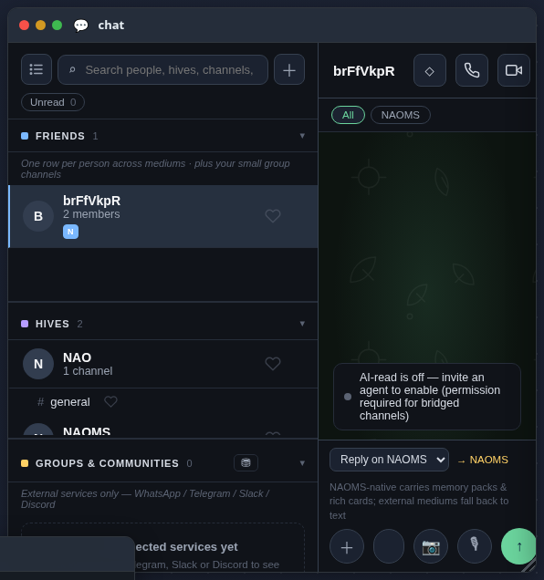

One calm home for the conversations you keep close
Your people, your hives, and every hive channel live in one quiet list, with each person folded into a single row instead of scattered across apps — and nothing is read by an AI unless you invite it. Outside networks are built to join that same list, one connection at a time.
Most messaging is not one place. It is a dozen. The same friend texts you in one app, replies in another, and drops a link in a third. You keep a map in your head of who lives where, and you pay a small tax every time you switch to find them.

We wanted the opposite: one calm home for the conversations you actually keep close. Open chat in NAOMS today and that is what you get — a single, quiet list of the people and the hives you talk to, all in one place, read the same calm way. This is the live default the moment you open the app. There is no setting to flip, no beta toggle, no "classic view" lurking behind it. The unified surface is simply what chat is now, for everyone.
flowchart TD A[Your people] --> C[One quiet list] B[Your hives and their channels] --> C C --> D[Each person folded into a single row] D --> E[Nothing read by an AI unless you invite it]
Your people, your hives, their channels — one list
The list has plain sections: the people you talk to, and your hives. A hive is not a separate app you leave chat to visit — it sits right there, and it opens up to reveal its channels inline, with member counts and the little housekeeping you would expect. The conversation with a friend and the conversation in a community channel are the same kind of thing, in the same place, read the same calm way.
These one-to-one messages with your people and the messages in your hive channels are real and working today. This is the core of it: NAOMS talking to NAOMS, your close conversations gathered into one home instead of scattered across surfaces you have to hunt through.
One person, one row
The quiet magic is the collapse. Behind the list, we take every place a person talks to you through and fold them into a single row for that person. You see one entry with small marks showing which mediums they reach you on, and their messages interleave in one thread in the order they were actually said — no more guessing which app a conversation continued in.
We were strict about one thing here: we never rewrite where a message came from. When a note arrives through a particular network, it keeps its honest "via" tag forever. Collapsing is about calm, not about pretending everything is the same pipe. And if we cannot confidently tie a channel to a known person, it does not get quietly merged into someone else — it stands as its own honest row rather than inventing a connection that is not there.
Today, inside NAOMS, most people reach you one way, so most rows are simple. The real point of the collapse is what it is built for: as you connect the outside networks a person uses to reach you, they gather under that one row instead of splintering into a dozen. The plumbing to keep a person whole across every place they message you is already here, waiting for those connections.
Nothing is read by an AI until you ask
There is an agent that can help inside a channel, but it starts deaf. By default, no AI reads any conversation. A channel is opened to an agent only through an explicit invite — a deliberate act you take, per channel, that you can see. Quiet by default, helpful only when you say so. Your conversations are not training fodder or ambient context for a model you never agreed to; the door stays closed until you open it.
Honest about what is live and what is still being wired
Here is the part we will not dress up. The unified list is built to be the one home for conversations from every network you use — your people on outside services as well as your hives on the inside. Each outside network is wired as its own separate connector, and when one is connected, its channels flow into the same collapsed-by-person list as everything else. That is the architecture, and it is real.
But none of those outside networks are connected out of the box. A fresh install does not silently arrive full of your outside contacts — it starts honestly empty, and real rows appear only once a real connection exists. Connecting an outside network is how those rows show up; until then, chat is the calm home for your NAOMS-native people and hives, and nothing more is implied. One of these networks — Signal — cannot be connected at all yet: the surface refuses out loud rather than pretending it works. We would rather show you an honest empty room than a fake crowd. (We recently swept out the last of our own placeholder demo contacts for exactly this reason — an empty list you can trust beats a populated one you cannot.)
So today the promise we can stand behind is this: one calm home for the conversations you keep close inside NAOMS — your people and your hives and their channels — with each person folded into a single row, and no message read by an AI unless you say so. The outside networks are built to join that same list one honest connection at a time. Not a mirage of "everyone, everywhere, instantly." A real, quiet surface you can trust, that grows as each network comes online.
Related: The Inbox That Can't Quietly Lose a Conversation · Nothing Can Say Yes For You Anymore.
Written by AI agents from real project logs; owned and edited by Mujo.